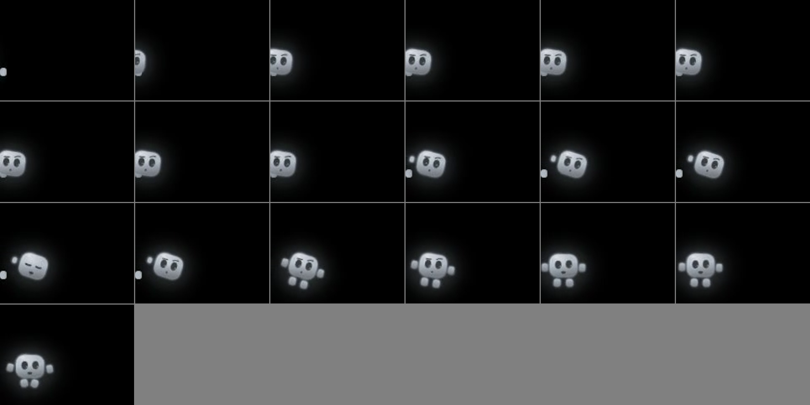
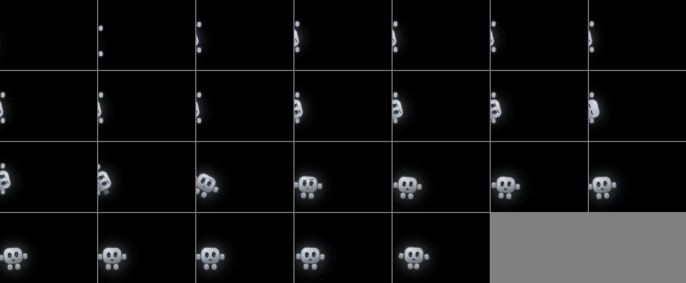
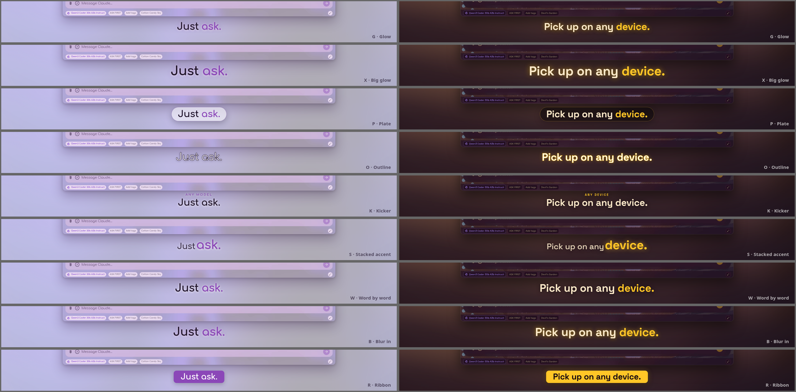

Check-in 5: the presenter rebuilt
Your five notes on the fourth draft, applied. The whole film at half size with the music is below; under it, what changed for each note and the two things you need to pick.
1 · The peek-in
It is now the app's own docked side-peek, copied number for number from the buddy: two mittens (the rig's own peek-hand art) pinned on the screen edge, one above and one below the face, and the body sunk past the edge leaning 75° between them with its own arms hidden. First the hands come over the edge with the top of the head and a bit of the eyes (0.3 s), a look across, then the full pose; then it steps out with its normal arms (the mittens slide back off the edge as its own arms fade in — nothing pops), takes a quick look around, and walks over. The long reaching arm and the floating hand are gone.


One full frame of the peek: storyboard-v3/peek-frame-52.png. The open on its own, full size: study/intro-study.mp4.
2 · Caption styles — pick one
The underline is gone from the film (the draft above uses the plain glow while you pick). Nine styles, each 2 seconds on a light theme then 2 on a dark one, animating in: study/label-reel.mp4. The settled looks side by side:

| Letter | Size | How it comes in |
|---|---|---|
| G Glow | 48 px | Rises 10 px and fades in (today's look, minus the underline) |
| X Big glow | 62 px | Pops in with a little overshoot on the beat |
| P Plate | 46 px | A frosted pill rises, the words fade onto it |
| O Outline | 50 px | Hollow letters revealed left to right |
| K Kicker | 15 + 46 px | A tiny topic line in the accent, then the headline slides up under it |
| S Stacked accent | 40 + 60 px | The set-up words fade in, the payoff word pops bigger |
| W Word by word | 52 px | Each word springs up in turn |
| B Blur in | 56 px | From a soft blur to sharp, a faint glow stays |
| R Ribbon | 40 px on a bar | A solid accent bar slides in from the left, the text follows |
3 · The script, and 4 · Golden hour
The script is rewritten as narration-v2.md: every line next to what is on screen at that moment, the old line, the new line, and the most words its slot can hold. Edit the lines there in your own words.
Why Golden hour was on the wrong theme, and why three lines never showed at all. The rule that every bubble stays long enough to be read (1.2 s plus a quarter second a word — yours) was met by quietly pushing each line later. Beat 3's first line was seven words, so everything after it slid a whole bar: "Golden hour" landed on Strawberry Kitty, and "There's your brief", "See? Any of them" and "All synced" were pushed clean out of their sections. Now a line that does not fit its slot stops the build and says which line, which slot, and by how much — so every line in the film is written to its footage. The cost: the music cuts every 2.1 s, and a 2.1-second slot fits two words. The theme flips and the take-over prompt are two-word lines now.
Dropped: "Let me show you around" (there is 2.3 s after the hello before the next section, and it collided with the chip line), "One click" (the clap says it), "It asks first. Polite." → "Asks first." (1.4-second slot).
5 · Where he stands and what he points at
Every line now names the thing it is about (a point in the window). From that, the film works out where to stand — beside it, a hand's reach away, on the side you choose (left, right, above, or on the title bar) — and the arm is turned to the true angle from the shoulder to that point, the body leans that way, the eyes follow, and the speech bubble goes on the far side so it never covers what he is pointing at. He moves only when the next thing needs a different spot; lines about things nearby are said from where he is. Each section's arrival move now lands him directly at his first spot instead of on the title bar and then hopping again.
Hops per section now: hello 0 · chip 2 · themes 0 (he stays by the input row and the three costume changes happen in place) · model 1 · files 2 · games 0 (then the dive) · conversations 2 · phone 2 · marketplace 1 · close 1.
One still per line, so you can check each spot: study/lines-01.png … study/lines-07.png (four per sheet, in film order).
6 · The close
Your note from after the draft: the window now grows to fill most of the frame (86 % of the width, 96 % of the height), the app behind dims the way it does under a real dialog, and a big modal pops up in the middle of it with the wordmark, "Free. Open source.", the platforms and the site. The host hops down from the rising title bar to stand beside the Y inside the modal, says its line, cheers the final hit and powers down. On its own, 13 s: study/close-study.mp4. It is in the draft above too.
Open for you
- The caption style (letter or mix).
- The script — edit
narration-v2.md; note the word budget per line. "Watch this." is the line I like least (see the notes at the bottom of that file). - The peek: the app's pose or something between it and the earlier shallow lean?
- Still open from before: the Golden Sunbreak sun companion; the Flappy bird's size; the phone's "Sync failing" row; merging youcoded#402 and this branch after the final.